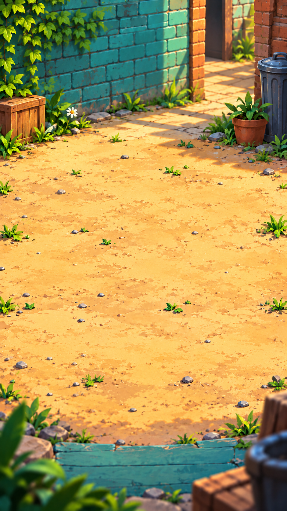
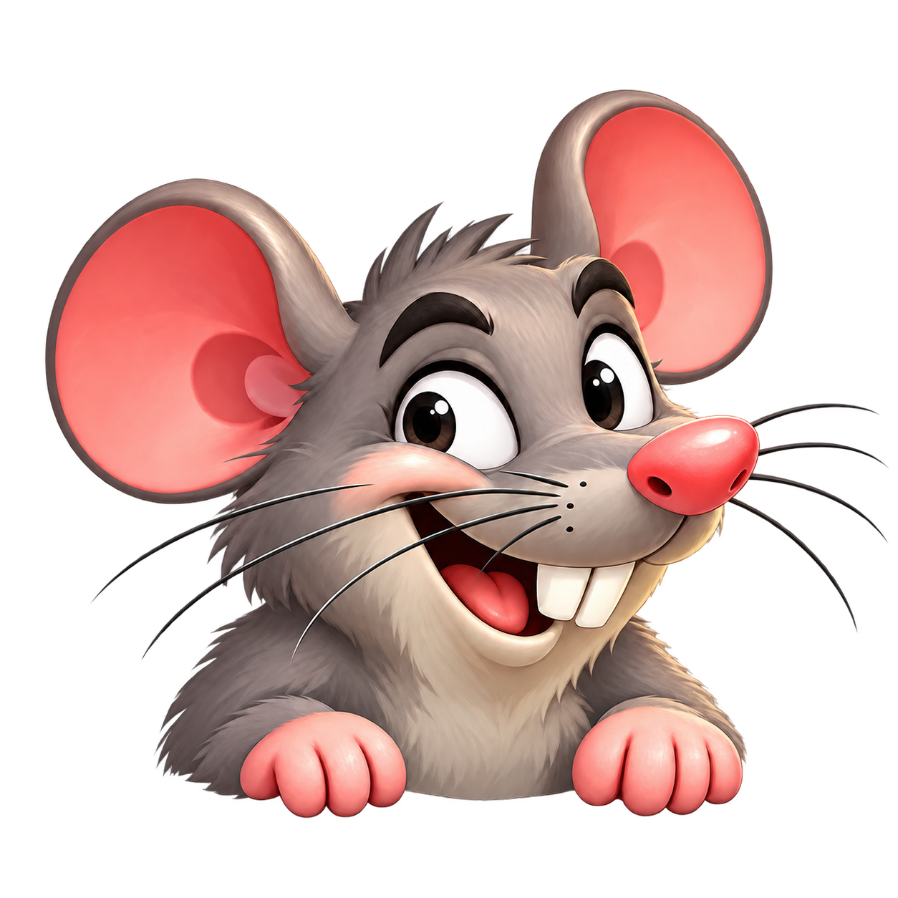

Your little pocket arcade
RAT
RUSH.
Little rats. Big scores.
Quick paws. Sneaky moves. One more try.
Four ways to play, each with a little mischief of its own.
Explore the modes ↓
 Catch the mischief.
Catch the mischief.
4 distinct modesOffline playNo adsNo account needed
Find your favorite kind of chaos
Same mischievous rats.
Four different challenges.
Chase a new best, solve the next room, or hold your nerve. Every mode asks something different of you.


01Peek & pop
Peek Panic
Keep an eye on the holes and catch the rats as they pop up. Fast fingers help. Good aim matters.
- Rush: 60 seconds to catch as many rats as you can and push your score higher.
- Survival: three hearts, no time limit. Avoid wrong taps and missed rats, and see how long you last.
Reflexes · AccuracyChase & catch
Running Rat
Catch rats as they dash from hole to hole. Shelves and hiding spots keep you watching every corner of the room.
- Survive endless waves as more routes open and the pace builds.
- Watch for purple sneaky rats and the occasional speedy golden rat. Use the pan when you need a helping hand.
Tracking · TimingThink & guide
Guide to the Trap
Read the room and time its mechanisms to guide the rats into the trap. A careful plan can beat a quick tap.
- 36 progressively harder levels across the Boiler Room, Glasshouse, and Clocktower.
- Work with steam, bridges, and bells. Return to each puzzle to improve your stars.
Puzzles · PrecisionRead & react
Outsmart the Rat
Three pieces of cheese. One crafty opponent. Watch the entrances and close the right shutter when the rat makes its move.
- An endless duel of real attacks, bluffs, and unexpected switches.
- Protect your cheese, keep your streak going, and resist the urge to react too early.
Patience · Prediction
A look inside the game's rooms. Game artwork shown; gameplay controls are not pictured.
Made for your next spare minute
Your arcade.
Your pace.
Rat Rush is the first game from JPK, an independent developer. It brings quick arcade rounds and thoughtful puzzles together in one colorful little world.
Built for Android with Solana Seeker players in mind. The game itself works offline, with no account or wallet connection required.
- Play your way
- Go for a quick Rush round, settle into a survival run, or take on the next puzzle.
- Keep your best
- Scores, puzzle progress, and sound preferences are saved on your device.
- Stay in the game
- No advertising or in-app purchases in the current version. Sound can be muted whenever you like.
Good to know
A few quick answers.
Do I need an internet connection to play?
No. Rat Rush's game modes work offline. Visiting this website, contacting support, or obtaining app updates uses an internet connection.
Do I need a wallet or an account?
No. There is no sign-in or wallet connection. Scores and stars are in-game achievements, with no token or monetary rewards.
Where is my progress saved?
On your device. JPK does not operate a cloud-save service. Clearing the app's storage or uninstalling it can remove your records and progress. Android backup and transfer behavior depends on your device settings.
How do I report a problem?
Email jpk.kh.24@gmail.com with your phone model, the mode you were playing, and what happened. A screenshot can help; please avoid including private information.
From the first tap to your new best
We're all ears.
Questions, feedback, or a rat behaving badly?